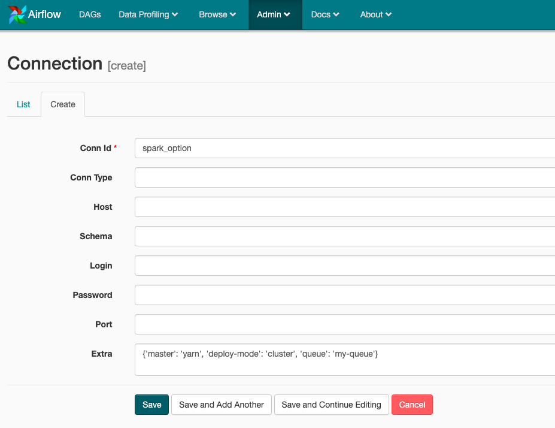

[Airflow] SparkSubmitOperator를 이용한 spark 실행
Airflow에서는 다양한 Operator를 지원하는데 그 중 Spark을 실행하기 위한 SparkSubmitOperator 라는 것이 존재한다.
이번에는 SparkSubmitOperator를 이용하여 spark application을 동작시켜보도록 하겠다.
사전작업
SparkSubmitOperator는 내부적으로 spark binary인 spark-submit 을 호출하는 방식으로 spark을 실행하고 있다. 그러므로 Apache spark 에서 각자의 환경에 알맞은 spark을 각 airflow worker에 다운로드 한후 다운로드 경로를 $SPARK_HOME을 환경변수로 등록하고 $SPARK_HOME/bin 을 path에 추가한다.
또한 필자는 yarn에 spark job을 동작시킬것임으로 HADOOP_HOME(Hadoop Binary), HADOOP_CONF_DIR(Hadoop 설정파일) 등을 설정한다.
SparkSubmitOperator 사용
from airflow import DAG
from datetime import datetime, timedelta
from airflow.contrib.operators.spark_submit_operator import SparkSubmitOperator
default_args = {
'start_date': datetime(2015, 12, 1),
'retries': 0,
'catchup': False,
'retry_delay': timedelta(minutes=5),
}
dag = DAG('sample_spark', default_args=default_args, schedule_interval="@once")
spark_config = {
'conf': {
"spark.yarn.maxAppAttempts": "1",
"spark.yarn.executor.memoryOverhead": "5120"
},
'conn_id': 'spark_option',
'application': '/{실행하고자 하는 jar path}',
'driver_memory': "2g",
'executor_cores': 10,
'num_executors': 10,
'executor_memory': '5g',
'keytab': '/ketab/path', ## kerberos 인증이 필요하다면
'principal': '{keytab.principal}', ## kerberos 인증이 필요하다면
'java_class': '{jar파일 안에 포함된 main class}',
'driver_memory': '3g',
}
operator = SparkSubmitOperator(task_id='spark_submit_task', dag=dag, **spark_config)
위의 예시는 필요한 필부 설정만 작업한 것이고, 전체 파라미터를 보려면 SparkSubmitOperator 소스코드를 보는게 좋다. 아래는 실제 코드의 일부분이다.
(좀더 상세한 옵션 예제는 여기 에서 확인하면 된다.)
## airflow/contirb/operators/spark_submit_operator.py
@apply_defaults
def __init__(self,
application='',
conf=None,
conn_id='spark_default',
files=None,
py_files=None,
archives=None,
driver_class_path=None,
jars=None,
java_class=None,
packages=None,
exclude_packages=None,
repositories=None,
total_executor_cores=None,
executor_cores=None,
executor_memory=None,
driver_memory=None,
keytab=None,
principal=None,
proxy_user=None,
name='airflow-spark',
num_executors=None,
application_args=None,
env_vars=None,
verbose=False,
spark_binary="spark-submit",
*args,
**kwargs):
그런데 DAG를 생성하다보니 특이한점이 보였다. 바로 spark-submit 시 필요한 Argument인 --master --deploy-mode --queue 등을 옵션으로 넘겨줄 수 없다는것인데, 이를 해결하기 위해 관련 코드를 열어보았다.
## airflow/contrib/hooks/spark_submit_hook.py
def _resolve_connection(self):
# Build from connection master or default to yarn if not available
conn_data = {'master': 'yarn',
'queue': None,
'deploy_mode': None,
'spark_home': None,
'spark_binary': self._spark_binary or "spark-submit",
'namespace': None}
try:
# Master can be local, yarn, spark://HOST:PORT, mesos://HOST:PORT and
# k8s://https://<HOST>:<PORT>
conn = self.get_connection(self._conn_id)
if conn.port:
conn_data['master'] = "{}:{}".format(conn.host, conn.port)
else:
conn_data['master'] = conn.host
# Determine optional yarn queue from the extra field
extra = conn.extra_dejson
conn_data['queue'] = extra.get('queue', None)
conn_data['deploy_mode'] = extra.get('deploy-mode', None)
conn_data['spark_home'] = extra.get('spark-home', None)
conn_data['spark_binary'] = self._spark_binary or \
extra.get('spark-binary', "spark-submit")
conn_data['namespace'] = extra.get('namespace')
except AirflowException:
self.log.info(
"Could not load connection string %s, defaulting to %s",
self._conn_id, conn_data['master']
)
return conn_data
코드를 보면 master queue deploy-mode spark-home spark-binary namespace 를 extra.get을 통해서 어디선가 가져오는게 보인다. 여기에 extra는 바로 Airflow Web -> admin -> Connnections 에서 가져온다.
아래의 이미지처럼 Extra 부분에 json 으로 필요한 부분을 적어주고, Connection의 Conn id를 DAG 설정시 사용했던 spark_config에 conn_id로 넣어주면 된다.

위와같이 SparkSubmitOperator와 Connection 을 이용하여 spark-submit을 airflow에서 사용할수 있게 되었다.
하지만 필자는 동작시키는 Spark Application마다 queue를 변경시켜야 할 이슈가 있었다. 이러한 상황에서 SparkSubmitOperator를 그대로 쓰려면 사용하려는 queue 마다 connection을 생성해야 하는 번거로운 작업을 해야함으로 필자는 결국 BashOperator로 spark-submit 을 직접 호출하는 방식으로 사용하고 있다.